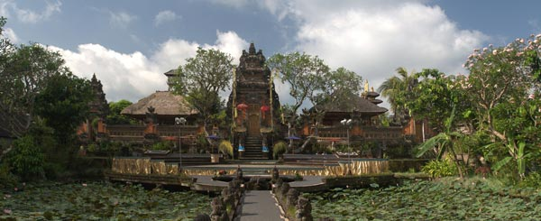
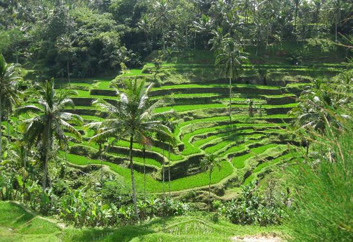
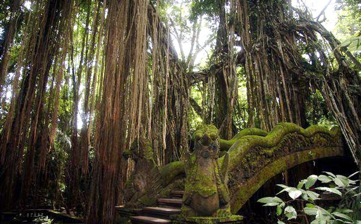
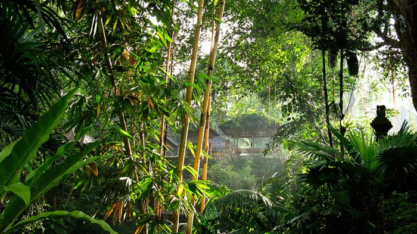

Wisata Ubud Bali
Wisata Ubud Bali, tempat wisata di Bali yang banyak wisatawan mancanegara dan wisatawan domestik yang tertarik untuk kunjungi. Tempat wisata di Ubud Bali, adalah sebuah kecamatan yang sangat terkenal semejak tahun 1930-an.
Tempat wisata di Ubud Bali, terletak di Kabupaten Gianyar, Kabupaten yang banyak memiliki seniman dan dapat dikatakan merupakan pusat budaya seni di Bali, khusus seni lukis, seni ukir, seni patung, seni tari dan musik traditional Bali.
Desa Ubud dari airport Denpasar , berjarak kurang lebih 40 kilometer, dan dengan mobil anda akan menempuh waktu selama satu setengah jam.
Wisata Ubud Bali Indonesia
Desa Ubud, daerah seni yang sangat sering disebut sebagai desa bertaraf internasional. Semua orang yang telah mengenal tempat wisata Ubud Bali pasti mengatakan, Ubud memang pantas untuk menyandang predikat desa internasional. Sebagian besar dipinggir jalan di kawasan ubud terdapat restaurant, hotel, galeri dan toko-toko yang menjual kerajinan lokal.
Tempat wisata di Ubud Bali sangat terkenal terkenal, baik di Indonesia maupun ke mancanegara, kecamatan yang memiliki lokasi yang terletak di antara persawahan dan kawasan hutan diapit oleh jurang-jurang dengan sungai, yang membuat lokasi ini, menggambarkan alam yang sangat indah.
Selain karena kondisi alam, Ubud juga terkenal karena seni dan budaya Bali dan sangat berkembang dari tahun ketahun. Sebagian masyarakat Ubud, kehidupan sehari-hari mereka tidak lepas dari unsur seni dan budaya. Juga sebagian masyarakatnya bermata pencaharian sebagai seniman.
Daftar Aktifitas & Tempat Menarik Di Ubud
Tampak Siring

Puri Ubud
Pura Taman Saraswati
Tari Kecak Ubud

Lempad House

Ayung Rafting

Sawah Terasering Ubud
Ubud Monkey Forest
Arma Museum Ubud

Goa Gajah Ubud

Gunung Kawi Bali

Air Terjun Tegenungan

Tirta Sari Legong
Museum Puri Lukisan Ubud

Pura Gunung Lebah
Museum Neka Ubud Bali
Museum Blanco Ubud

Legong Mahabharata

Yeh Pulu Relief
Tari Barong Ubud